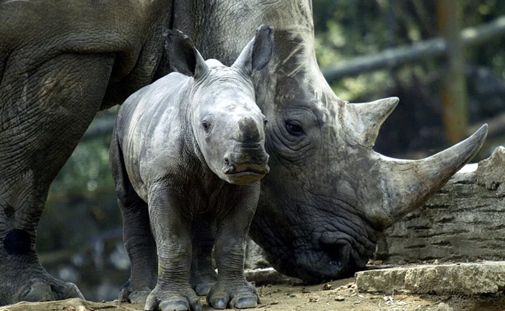
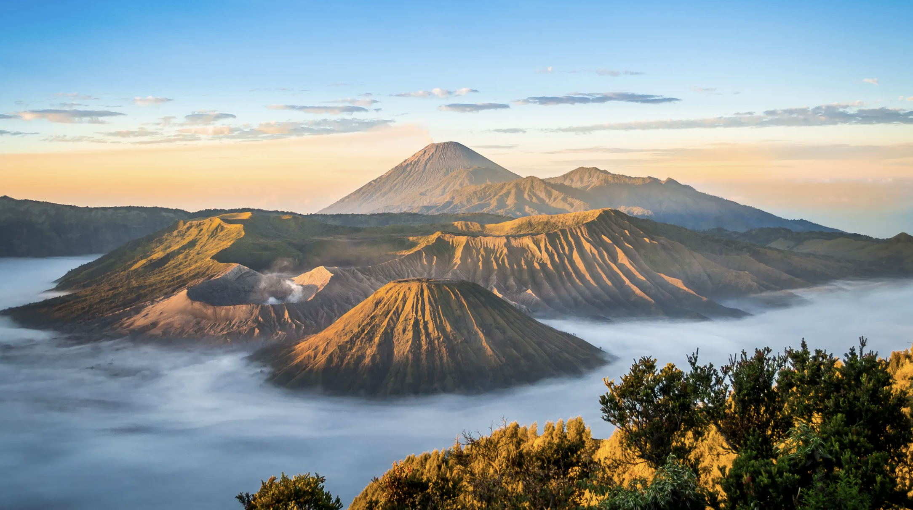
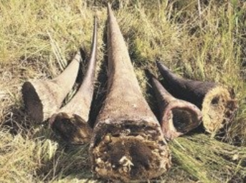

Javan Rhinos Information
The Javan rhinoceros (Rhinoceros sondaicus) are a phenomenal and meaningful species, yet tragically, they are very nearly eliminated. On this page, we welcome you to dig into the life and basic territory of Javan rhinos, as well as the dangers they face in their local natural surroundings.
Population:
Under 70 people in the wild, most endangered species on the planet.
Location:
Island of Java, Indonesia. This is the only place in the world where these rhinos live.
Dangers:
Hunting, deforestation and human development. If this continues there will be no Javan Rhinos soon.
Join Our Cause:
The Rhino Awareness Foundation couldn't go about its significant responsibilities without the help of individuals like you. We welcome you to join our objective, whether through donations or basically sharing our data to bring issues to light about the endangered Javan rhinos.
More information:
You can look for more info about the issue at:
International Rhino Foundation